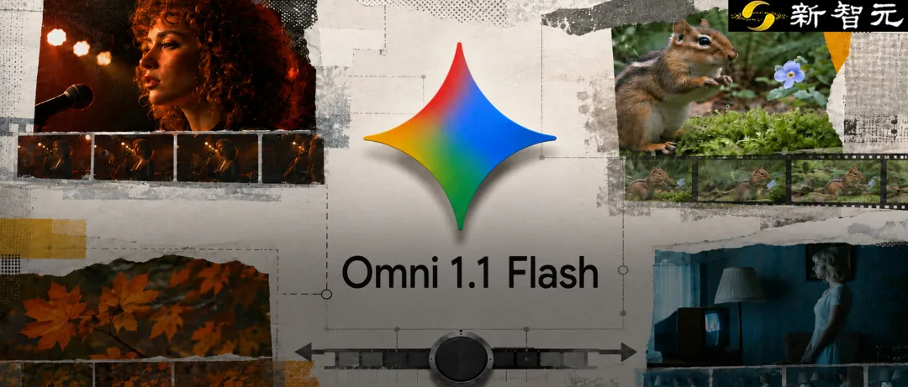

新智元报道
新智元报道

不得了。
谷歌刚刚更新的Gemini Omni 1.1 Flash，直接冲上了Arena文生视频全球第一。
图生视频，全球第二，1488分。
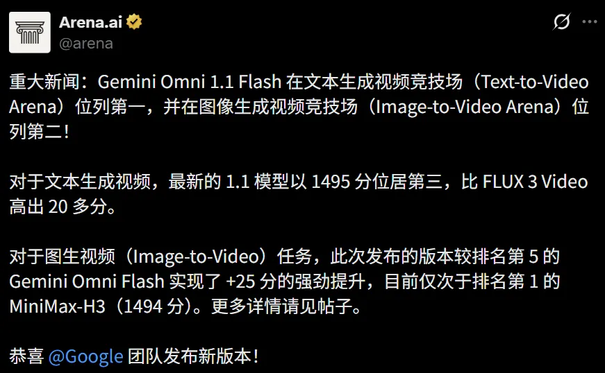
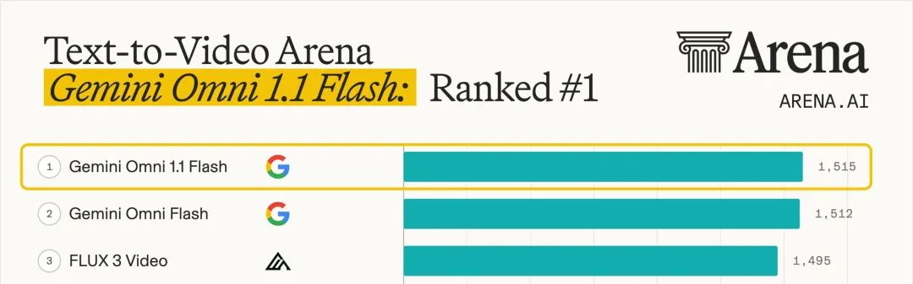
但排名只是开胃菜。
真正的突破是，谷歌把过去AI视频最折磨人的几件事，一口气全改了。
场景延展，模型能回看前面最多10秒的画面接着往下拍，以10秒为一段，累计最长40秒
首尾帧，你指定起始帧和结束帧，中间那段连续运动它自己生成
360p草稿，比720p最多快60%，成本只有三分之一，选中的再一路升到4K
4K放大，成片可以升到1080p或者4K
视频参考，最多3秒的参考视频可以混进输入里，把动作、运镜和节奏一起揉进新镜头
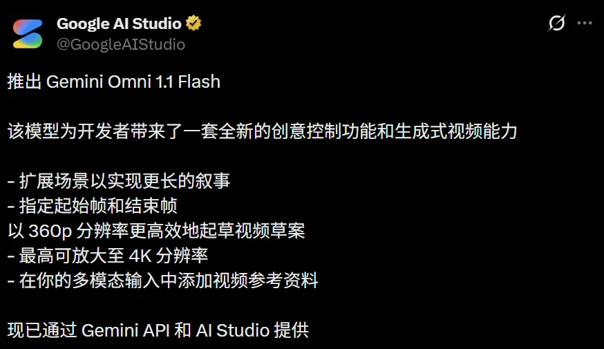
好好好，AI视频这次终于不只会「再抽一张」了。
它开始会接戏、会走位，甚至有点剪辑思维了。
划重点，模型续拍时能看的上下文，从Veo的1秒变成了10秒。

1秒能装下什么呢。
镜头刚推过去，它就忘了刚才谁站在门口、屋里什么色温、这场戏本来要往哪走。所以过去大家用AI视频，基本就是随缘抽卡，生成，不满意，重来。
10秒就不一样了。这里面装着角色的脸、衣服和站位，装着灯光的方向和色温，装着上一句台词的语气，也装着镜头正往哪个方向动。
从1秒到10秒，这是Veo到Omni 1.1之间最大的一步。
光说没意思，直接看效果。

首先是一个红发女子的特写，一束红光打在侧脸上。
然后第一句续拍，镜头微微横摇，画面里多出一个卷发男人的背影，他说「我也看见了」，配乐压上来。
第二句，镜头缓缓拉出，两个人原来站在一座积满灰尘、被遗忘的地下墓穴里。
第三句再往外拉，墓穴变成一座巨大的图书馆，书架和书本在尘埃弥漫的虚空里失重漂浮。
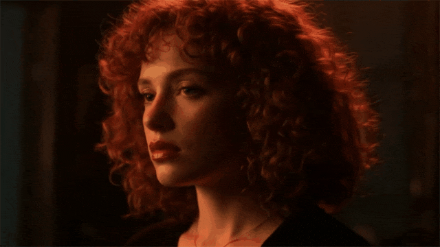
三次续拍，红发女子的脸、发色和那束红光全程没崩
从两个人的对视一路拉到一座悬浮的图书馆，中间没有一个剪辑点。
第二组更狠，直接点名要运镜技巧。
Prompt 1 ：继续这段视频。执行一个电影级的移动变焦（dolly-zoom）。摄影机向前推进的同时镜头拉远，让角色僵住的惊恐表情始终保持同样大小。背景里那排石柱构成的长廊被强烈的透视畸变拉长、加深。干净的建筑结构，一镜不断。
Prompt 2 ：继续这段视频。摄影机快速机械急推，直接怼进角色瞪大的眼睛。
Prompt 3 ：继续这段视频。时间彻底冻结成一个静止的瞬间，角色，还有他被风吹起的大衣。摄影机围绕冻结的角色做一次流畅的高速360度环绕，展现柱廊之间强烈的3D纵深和视差。完美连贯。
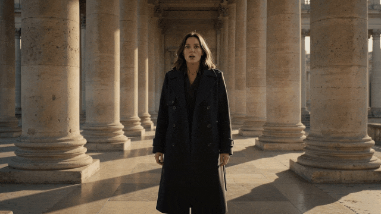
希区柯克变焦、机械急推、时间冻结环绕，三句话点了三个电影学院要讲一学期的镜头。
对白也能接。
退潮的滩涂上搁着几条蓝白渔船，海鸥低飞。
蓝毛衣男人问了句「你父亲也出海吗」，白胡子老人转过头开口，镜头一镜到底缓缓后拉，他接着讲，「他常说，这个港口是有灵魂的。那些船，是我们的一部分」，音乐渐强。
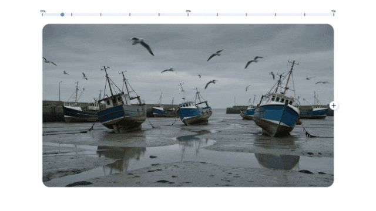
一段接一段，时间轴一路走到30秒，两个人还并排坐在同一条船上，语气一次没断。
接上的不光是画面，还有一句没说完的话。
最后，还有更放炸的。
一个作家坐在图书馆的书桌前写字，绿罩台灯，窗外是雨。
他忽然抬头直视镜头，讲这最后一章会怎么收尾，然后站起身，绕过书桌一直走到镜头前，问了一句「你会怎么选」。
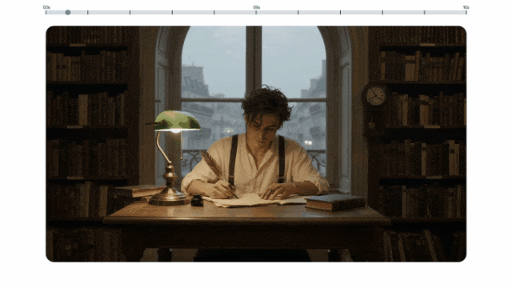
一个AI生成的人物，就这么把第四面墙推到了！
如果说场景延展管的是「接得上」，那这两个新能力管的就是「按你想的来」。
第二个新能力是首尾帧。
你把起始帧和结束帧都给它，中间的连续运动交给模型生成。
这个功能主要冲着复杂运镜、变焦转场和无缝循环去的，过去这类活儿只能靠反复抽卡碰运气。
这条大厅镜头最能炫技。
Prompt：低角度特写，一位穿米色西装的时髦鼓手在大厅里打一套红色鼓组，镜头猛地甩向侧面，柔和的紫色舞台灯下露出一位年长的萨克斯手，旁边是穿白裙旋转的芭蕾舞者。一镜到底，不许跳切。
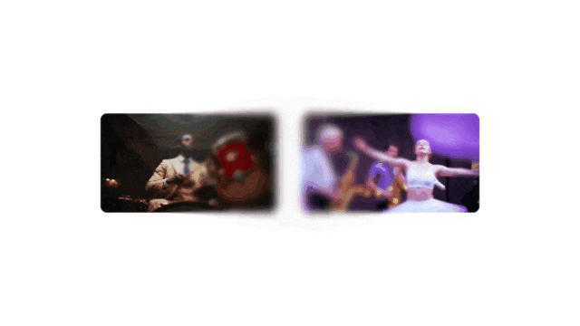
还有一条更绕的。
镜头一路推进屋里那台老电视的屏幕，屏幕里是同一个房间、同一个穿白裙的女人、同一个开头的画面。无缝衔接，一镜到底。
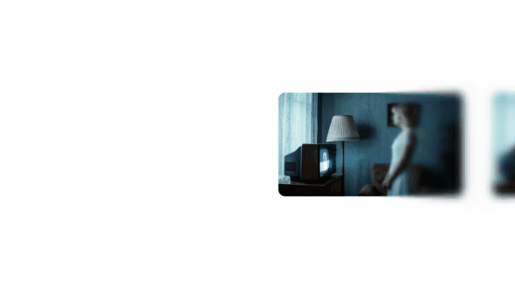
镜头推进电视屏幕，屏幕里是同一个房间同一个人
第三个新能力是视频参考，最多3秒的参考视频，可以和图片、文字混着一起丢进去。
它改的是沟通方式，你不用再费劲描述一个动作，直接指给它看就行。
Prompt：用上传的三段舞者视频，把里面的人替换成给定的角色，让他们在提供图片里那个开阔空间中一起跳各自的舞。狗（dog.png）跳dance3.mp4里的古典舞，章鱼（octo.png）跳dance1.mp4里的嘻哈，熊（bear.png）跳dance2.mp4里的霹雳舞。最终成片一镜到底，不许有场景切换。
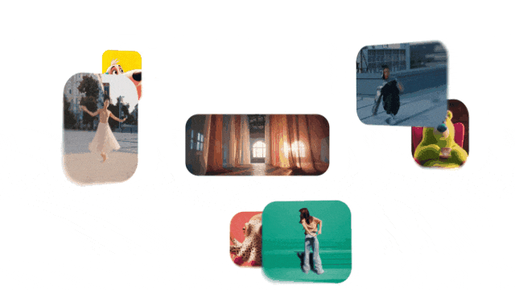
狗跳古典舞，章鱼跳嘻哈，熊跳霹雳舞，一镜到底
已经有两个应用直接吃这两项能力。
一个叫Transition Studio，把头帧和尾帧丢进去，从物体传送门、甩镜、形变匹配、天空替换、前景擦除、时光机里挑一个转场技法，中间那段它自己接。
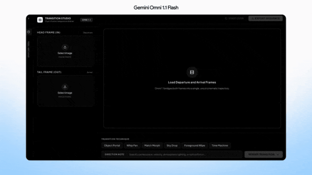
一个是看房应用，镜头在房间之间推、拉、环绕，把房子放在一天里最好的那个时辰，而且不会凭空添一件不存在的家具。
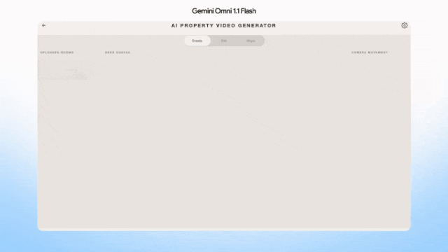
360p草稿这个功能，是专门给试错准备的。
AI视频本来就得生成好几条才能挑中一条，谷歌干脆把试错这一步单独做便宜，你先用360p把方向试出来，挑中哪条再升到高分辨率。
360p草稿模式比720p最多快60%，成本只有三分之一。
算笔账就懂了。
一个10秒镜头你想试20个方向，720p抽满20次是20美元，360p抽满20次只要6美元，挑中的那条再花3美元升到4K交片。
Draft Room就是照这个逻辑做的，一条提示词铺出四个变体，一次只改一个维度，摆在一起直接比，选中的再一次性升到1080p或者4K。
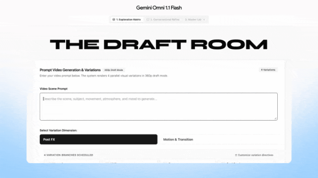
那360p到底能糊到什么程度，瞅瞅这条。
Prompt：海洋硅藻的显微视角，玻璃质的硅壳呈现精细的天然对称结构。颜色从深火山琥珀、暖铜色一路排到明亮的绿松石和紫罗兰。微小结构在干净的暗场背景中柔和发光。高保真科学成像，锐利细节，有机质感，微距摄影。全片保持显微镜镜头效果。
草稿阶段能看清结构和调子，也就够用了。真到交片那一步，再输出4K版本即可。
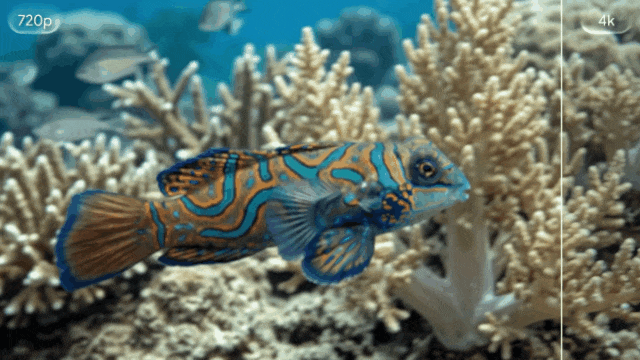
价格这边全部按秒计费，一共四档。从开发者、企业到普通订阅用户，今天都能上手。
360p，每秒0.03美元
720p，每秒0.10美元
1080p，每秒0.15美元
4K，每秒0.30美元
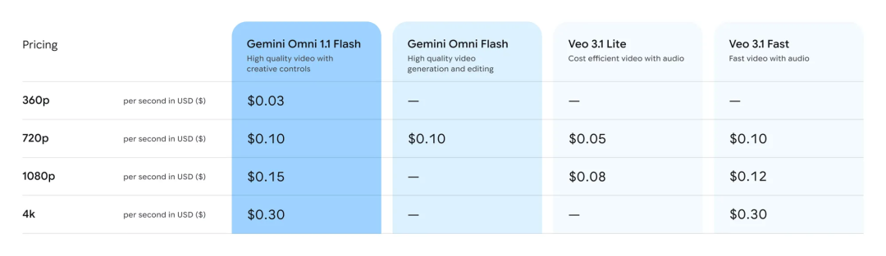
如果把这五个功能按导演干活的顺序摆一遍，你就会发现它们其实是一条流水线——
首尾帧定分镜，360p拍草稿，视频参考锁角色，场景延展接戏，4K放大交片。
正如Figma Weave创意总监Itay Schiff所说，这一步跨过去，团队就从「生成视频」走到了「真正地导演视频」。
参考资料：
https://x.com/googleaistudio/status/2093008678118998298
https://blog.google/innovation-and-ai/technology/developers-tools/build-with-gemini-omni-1-1-flash/
编辑：摩西